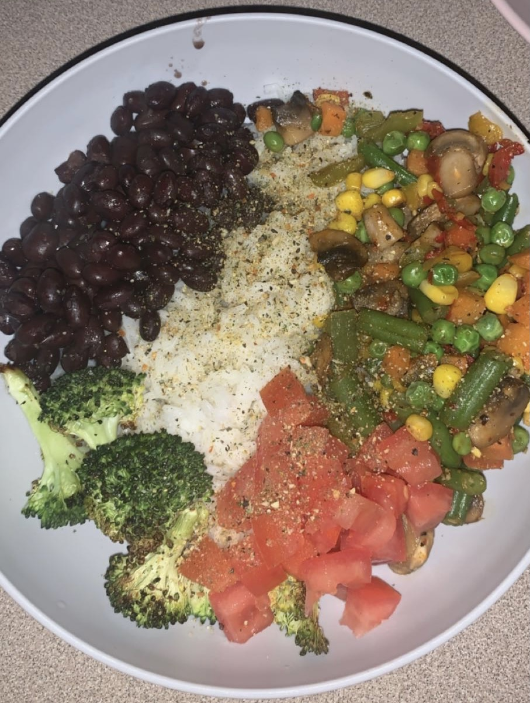

Recipes
Two of my Favorite Plant-Based Recipes
Cauliflower Rice Bowl
Ingredients
- 1/2 can of black beans
- 1 cup of cauliflower rice
- 2/3 cup of mixed veggies
- 1/2 cup of peppers
- 1/3 cup of mushrooms
- Herbs and spices of your choice (I use black pepper, tumeric, and cajun)

- Cook veggies in a skillet pan on medium heat for 8 minutes
- Cook cauliflower rice in a skillet pan on medium for 4 minutes
- Cook beans until they begin to simmer
- Add all contents into a bowl and mix
Peanut Butter Banana Oatmeal
Ingredients
- 1/2 ripe banana
- 1/2 cup of oats
- 1/2 cup of dairy-free milk
- 1 tbs. of cinnimon
- Mash banana in bottom of bowl
- add in oats and milk
- Microwave for 1 minute
- Add cinnimon and stir